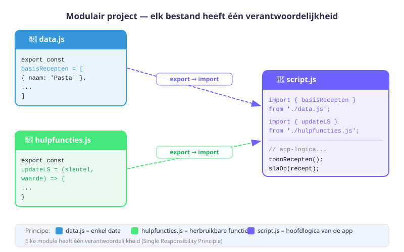
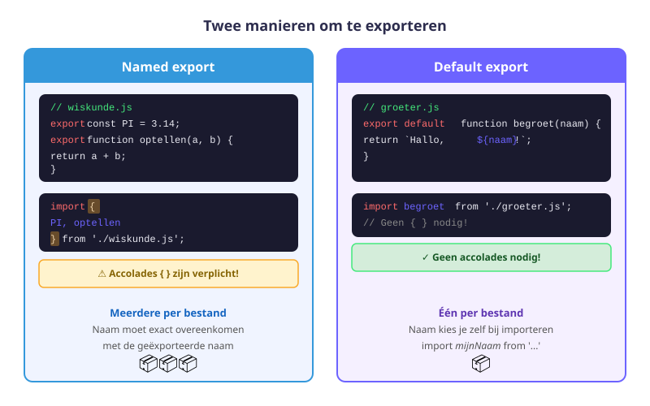
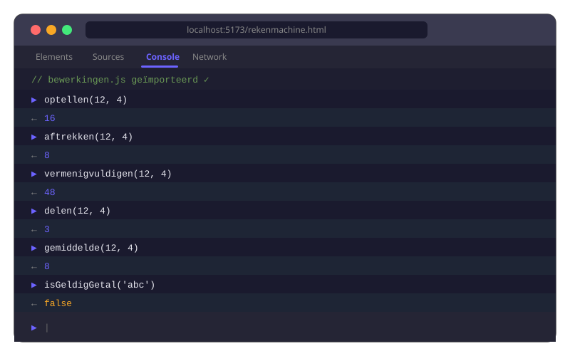

ES Modules
- Uitleggen waarom we code opdelen in modules
- Een waarde of functie exporteren met
export - Een waarde of functie importeren met
import - Het verschil kennen tussen named export en default export
type="module"correct gebruiken in een HTML-script-tag- Een modulair project structureren over meerdere bestanden
7.1 Waarom modules?
Zonder modules zet je alle JavaScript in één groot bestand. Bij een kleine app is dat nog te doen, maar zodra je project groeit, wordt het:
- moeilijk leesbaar — 500+ regels in één bestand
- moeilijk te onderhouden — een wijziging kan overal iets kapotmaken
- niet herbruikbaar — dezelfde functie kopiëren naar een ander project
Met modules verdeel je je code over meerdere bestanden, elk met een duidelijke verantwoordelijkheid:
project/
├── index.html
├── hulpfuncties.js ← hulpfuncties (herbruikbaar)
├── data.js ← alle data (herbruikbaar)
└── script.js ← logica voor deze pagina
7.2 Named exports
Je kan één of meerdere dingen exporteren uit een bestand met het sleutelwoord export:
// wiskunde.js
export const PI = 3.14159;
export function optellen(a, b) {
return a + b;
}
export function aftrekken(a, b) {
return a - b;
}
export const vermenigvuldigen = (a, b) => a * b;Je kan ook alles exporteren aan het einde van het bestand:
// wiskunde.js — alternatieve manier
const PI = 3.14159;
function optellen(a, b) { return a + b; }
function aftrekken(a, b) { return a - b; }
export { PI, optellen, aftrekken };7.3 Named imports
In een ander bestand importeer je de geëxporteerde waarden met import:
// main.js
import { PI, optellen, aftrekken } from './wiskunde.js';
console.log(PI); // 3.14159
console.log(optellen(4, 5)); // 9
console.log(aftrekken(10, 3)); // 7- De naam tussen
{}moet exact overeenkomen met de naam in het export-bestand - Het pad begint met
./(huidig mapje) of../(mapje hoger) - De extensie
.jsis verplicht in browser-modules
Je kan een import hernoemen met as:
import { optellen as som } from './wiskunde.js';
console.log(som(2, 3)); // 57.4 Default export
Een bestand kan ook één default export hebben. Dit is handig als het bestand maar één hoofdding exporteert:
// groeter.js
export default function begroet(naam) {
return `Hallo, ${naam}!`;
}Importeren van een default export: geen accolades, kies zelf een naam:
// main.js
import begroet from './groeter.js';
console.log(begroet('Jana')); // Hallo, Jana!| Named export | Default export | |
|---|---|---|
| Syntax export | export const x = ... | export default ... |
| Syntax import | import { x } from '...' | import x from '...' |
| Aantal per bestand | Meerdere | Één |
| Naam bij import | Moet overeenkomen | Kies zelf |

7.5 type="module" in HTML
Om modules te gebruiken in de browser moet de script-tag type="module" hebben:
<!-- index.html -->
<script src="script.js" type="module"></script>Wat dit automatisch doet:
- Strict mode is automatisch aan (zoals
"use strict") - Het script wordt uitgesteld (alsof
defer— de HTML is al geladen voor het script start) - Elk bestand heeft zijn eigen scope (variabelen lekken niet naar het globale object)
- CORS-regels gelden (module-scripts werken niet via
file://, gebruik een lokale server of VS Code Live Server)
Module-scripts werken niet als je het HTML-bestand direct opent via file://. Gebruik altijd de VS Code Live Server-extensie of een andere lokale server.
7.6 Bestandsstructuur en re-exports
Goed gebruik van modules — elk bestand heeft één verantwoordelijkheid:
// data.js — enkel data, geen logica
export const producten = [
{ naam: 'Appel', prijs: 0.50 },
{ naam: 'Brood', prijs: 2.40 },
{ naam: 'Melk', prijs: 1.20 },
];// hulpfuncties.js — herbruikbare functies
export const berekenTotaal = (lijst) => {
return lijst.reduce((som, product) => som + product.prijs, 0);
};
export const zoekProduct = (lijst, naam) => {
return lijst.find(p => p.naam === naam);
};// script.js — paginalogica, combineert alles
import { producten } from './data.js';
import { berekenTotaal, zoekProduct } from './hulpfuncties.js';
const totaal = berekenTotaal(producten);
console.log(`Totaal: €${totaal.toFixed(2)}`); // Totaal: €4.10
const gevonden = zoekProduct(producten, 'Brood');
console.log(gevonden); // { naam: 'Brood', prijs: 2.40 }Re-exports — barrel-bestand
// index.js (barrel) — alles vanuit één plek importeren
export { berekenTotaal, zoekProduct } from './hulpfuncties.js';
export { producten } from './data.js';// main.js — importeer alles uit één plek
import { producten, berekenTotaal } from './index.js';Oefeningen
Bouw een modulaire rekenmachine verspreid over drie bestanden.
- Maak
bewerkingen.jsen exporteer 5 functies:optellen,aftrekken,vermenigvuldigen,delen,gemiddelde - Maak
validatie.jsen exporteer een functieisGeldigGetal(waarde)die controleert of de invoer een getal is (geen NaN, geen Infinity) - Maak
main.js: importeer alles, vraag twee getallen op viaprompt(), valideer ze en toon alle bewerkingen - Maak
index.htmlmet<script type="module" src="main.js"></script> - Test via VS Code Live Server (niet via file://)

Maak twee bestanden om het verschil te begrijpen tussen named en default exports.
- Maak
kleuren.jsmet een named exportkleurenLijst(array met 5 kleuren) en een named exportgetRandomKleur(lijst) - Maak
begroeting.jsmet een default export: een functie die een naam aanneemt en een begroeting teruggeeft - Importeer beide in
app.js: gebruik accolades voor de named exports, geen accolades voor de default export - Log een willekeurige kleur en een begroeting voor je eigen naam
Neem de bestanden van Oefening 1 en maak er een barrel-bestand van.
- Maak
index.jsdie zowel de bewerkingen als de validatiefuncties re-exporteert - Pas
main.jsaan zodat je alles importeert vanuit./index.jsin plaats van uit de afzonderlijke bestanden - Controleer dat alles nog werkt
- Beschrijf in commentaar: wat zijn de voor- en nadelen van een barrel-bestand?
Huistaak
Opdracht: Modulaire studentenapplicatie
Bouw een modulaire applicatie die studentendata beheert, verspreid over minstens 3 JavaScript-bestanden.
Deel 1 — Modules opzetten (4 punten)
- Maak
data.jsmet een geëxporteerde array van minstens 5 studenten (naam, punten, geslaagd, klas) - Maak
analyse.jsmet geëxporteerde functies:getGeslaagden(studenten),getBeste(studenten),gemiddeldePunten(studenten) - Maak
opmaak.jsmet een default export: een functie die een student als string formatteert
Deel 2 — Importeren en gebruiken (3 punten)
- Maak
main.jsen importeer alles correct (named én default) - Log de lijst van geslaagde studenten, de beste student en het gemiddelde
- Toon alle studenten via de opmaakfunctie
Deel 3 — HTML integratie (3 punten)
- Maak
index.htmlmettype="module"op de script-tag - Test via VS Code Live Server
- Maak de resultaten zichtbaar op de pagina via DOM-manipulatie (
textContentofinnerHTML)
Dien alle JS-bestanden en index.html in. Totaal: 10 punten
Vragenlijst
Controleer of je de leerstof van dit hoofdstuk begrijpt.
Hoe importeer je een named export genaamd berekenTotaal uit het bestand ./hulp.js?
Hoeveel default exports mag een bestand hebben?
Waarvoor dient type="module" op een script-tag?
Wat is een "barrel-bestand" in de context van modules?
Waarom werken module-scripts niet als je het HTML-bestand direct opent via file://?
Welk pad gebruik je om te importeren uit een bestand in hetzelfde mapje?